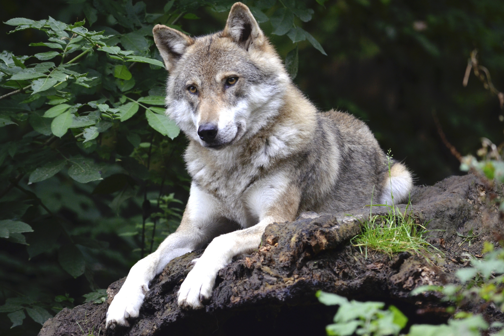

Parco Nazionale del Pollino
Il Parco Nazionale del Pollino, istituito nel 1993, è il parco nazionale più grande d’Italia, con una superficie di circa 192.000 ettari. Situato tra la Basilicata e la Calabria, il parco prende il nome dal Massiccio del Pollino, una catena montuosa che raggiunge la sua massima altezza con il Monte Serra Dolcedorme (2.267 metri). Questo parco, caratterizzato da una natura selvaggia e incontaminata, è un autentico scrigno di biodiversità, paesaggi mozzafiato e tradizioni culturali radicate.
Montagne e paesaggi spettacolari
Le montagne del Parco Nazionale del Pollino offrono una straordinaria varietà di paesaggi, dai pendii scoscesi e ricoperti di boschi secolari, fino alle cime rocciose che dominano il panorama. Il Monte Pollino, il Monte Serra Dolcedorme e il Monte Alpi sono tra le vette più imponenti del parco e attirano escursionisti da tutto il mondo. Il territorio del Pollino è attraversato da gole profonde e canyon, tra cui spiccano le Gole del Raganello, un’impressionante formazione naturale scavata dall’omonimo torrente. Questi paesaggi, modellati dall’erosione e dalle forze geologiche, sono una combinazione di rocce calcaree, formazioni carsiche e prati alpini, offrendo un ambiente vario e affascinante.
Fauna emblematica
Il Parco Nazionale del Pollino ospita una ricca biodiversità, rendendolo una delle aree naturali più preziose d’Italia. Tra i mammiferi, si possono trovare il lupo appenninico, simbolo del parco, che si aggira silenziosamente tra i boschi, e il cinghiale. Cervi e caprioli sono altre presenze comuni, mentre nelle zone più alte si avvistano aquile reali e poiane.
Attività per i visitatori
Il Parco Nazionale del Pollino è una destinazione ideale per gli amanti della natura e degli sport all’aria aperta. Con oltre 200 chilometri di sentieri segnalati, il parco offre opportunità per escursioni di ogni livello, dalle passeggiate facili ai trekking più impegnativi. Tra i percorsi più noti c’è il sentiero che conduce alla Piana di Pollino, un vasto altopiano circondato da montagne, e quello verso la vetta del Monte Serra Dolcedorme, che regala panorami indimenticabili. Le Gole del Raganello sono una meta imperdibile per chi ama l’avventura. Qui, gli appassionati di canyoning possono esplorare cascate, piscine naturali e passaggi stretti tra le pareti rocciose. Altri visitatori preferiscono scoprire le gole attraverso tranquille passeggiate lungo i sentieri circostanti, godendo della vista e della frescura del torrente. Durante l’inverno, il parco si trasforma in una destinazione perfetta per gli sport sulla neve. Le cime più alte, come il Monte Pollino, offrono possibilità di escursioni con le ciaspole e sci alpinismo, mentre le aree boschive si prestano a rilassanti passeggiate in un paesaggio innevato.
Un patrimonio botanico unico
Uno degli elementi più iconici del Parco del Pollino è il pino loricato, un albero raro e maestoso che cresce sulle rocce più alte e inaccessibili. Questo albero, simbolo del parco, è in grado di resistere a condizioni climatiche estreme e colpisce per la sua forma contorta e il tronco ricoperto di una corteccia che ricorda l’armatura di un cavaliere. I pini loricati, alcuni dei quali sono vecchi di secoli, sono un vero e proprio monumento naturale. La flora del parco è altrettanto ricca e variegata. Le foreste di faggi, querce e aceri si alternano a prati alpini ricchi di fiori selvatici, come orchidee rare e gigli. Nelle aree più basse, il paesaggio è caratterizzato da uliveti e vigneti, che testimoniano la millenaria interazione tra l’uomo e il territorio.
Conservazione e sostenibilità
Il parco è facilmente accessibile da diverse località sia in Basilicata che in Calabria. I centri visita di Rotonda e Civita offrono informazioni dettagliate su sentieri, attività e attrazioni. La primavera e l’autunno sono i periodi migliori per esplorare il parco, grazie al clima mite e ai colori straordinari della natura. Tuttavia, ogni stagione offre esperienze uniche, che vanno dalle escursioni estive alle avventure invernali.
Come visitare il Parco Nazionale del Pollino
Il parco è facilmente accessibile da diverse località sia in Basilicata che in Calabria. I centri visita di Rotonda e Civita offrono informazioni dettagliate su sentieri, attività e attrazioni. La primavera e l’autunno sono i periodi migliori per esplorare il parco, grazie al clima mite e ai colori straordinari della natura. Tuttavia, ogni stagione offre esperienze uniche, che vanno dalle escursioni estive alle avventure invernali. Con i suoi paesaggi incontaminati, le tradizioni culturali e la straordinaria biodiversità, il Parco Nazionale del Pollino è una destinazione che incanta chiunque lo visiti. È un luogo dove la natura e la storia si incontrano, creando un’esperienza indimenticabile per gli amanti dell’ambiente e della scoperta.